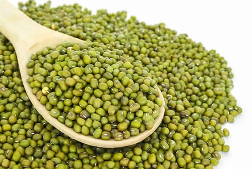

Favorite Recipes
Double Chocolate Cookies
Origin: Michigan Source: Family Recipe Category: Dessert
My daughter learned to make these cookies at a baking camp at Zingermanns and has tweaked the recipe to fit the taste buds of her siblings. They are extremely sugary so the salt helps to balance it. Note, these cookies are best eaten very quickly.
Recipe Ingredients
- Unsalted butter
- Granulated Sugar
- Packed light or dark brown sugar
- Large egg
- Pure vanilla extract
- Semi-sweet chocolate chunks (melted)
- All-purpose flour
- Natural unsweetened cocoa powder
- Baking soda
- Salt
- Semi-sweet chocolate chunks
Recipe Steps
- In a mixing bowl cream together the butter, granulated sugar, and brown sugar
- Add the egg and vanilla extract and beat well
- Add the melted chocolate
- In a separate bowl combine the flour, baking soda, cocoa powder and salt
- Combine the wet and dry ingredients
- Add the unmelted chocolate chunks.
- Form 15 cookies and place on a baking sheet.
- Cook for 12 to 13 minutes at 350 degrees.
Additional Food images


Savory Pancakes
Origin: Indian Source: Family Recipe Category: Healhty Breakfast
My favorite healthy savory pancakes recipe. It is easy and quick to make. It light, crispy and flavorful and contain good amount of protion. It is a family recipe.
Recipe Ingredients
- Soaked Whole Green Moong
- Green Chili
- Cuminr
- Lemon Juice
- Cilantro
- Salt
- Oil
Recipe Steps
- In a blender add soaked whole green moong and water and blend till smooth paste
- Add Green Chilli, Salt, Cumin, Lemon Juice, Cillantro to the paste and blend to make a batter
- Turn on a non stick griddle, lightly oil the pan
- Pour the batter to a hot griddle and cook on medium heat for 6 minutes on each side
- Serve with your favorite sauce
Additional Food images
Chicken Curry
Origin: Indian Source: Family Recipe Category: LunchMy comfort food is this chicken curry recipe. I make this chicken curry atleast twice a week. It is made with fresh ingrediants that are good for you and keeps you full.
Recipe Ingredients
- Chicken Pieces
- Onion
- Ginger
- Garlic
- Tomato
- Green Chili
- Cumin
- Coriander Powder
- Cilantro
- Salt
- Oil
Recipe Steps
- Take a pan, add oil and saute diced onion till golden.
- Add Cumin and Chiken to the onion mixture and fry for 10 minutes
- Add ginger garlic paste, green chilli paste, Coriander powder to the chicken and saute for another 15 minutes.
- Add salt, diced tomato and water.
- Cover the pan and let it cook for 20 minutes.
- Serve with rice.
Additional Food images
Cream of Mushroom baked chicken
Origin: Indian Source: Family Recipe Category: Dinner
This is my one pan chicken recipe. This recipe is very simple but tastes like you spent hours in the kitchen. This chicken bake recipe taste great with flat bread.
Recipe Ingredients
- Chicken Leg
- Campbell cream of Mushroom soup
- Black Pepper
- Garlic powder
- Red chilli powder
- Cumin
- Cumin
- Lemon
- Salt
- Oil
Recipe Steps
- Marinate chicken with all the spices for two hours.
- Place marinated chicken pieces in baking pan pour Campbell's cream of mushroom soup over it.
- Cover the pan and bake on 375 for an hour and half.
- Garnish with cilantro and serve with bread
Additional Food images
Fried Fish Nest
Origin: Indian Source: Family Recipe Category: AppetizerI developed this recipe by accident. One of my close family members is a pescatarian, and I wanted to create something special for them. If you give this recipe a try, you'll never yearn for beer battered fish and chips again. It's bursting with flavor and has a delightful crispy exterior with a tender interior.
Recipe Ingredients
- Tilapia fillet
- Onion
- Black pepper
- Garlic
- Red pepper flakes
- Green Chili
- Cumin
- Coriander Powder
- Lemon Juice
- Cilantro
- Corn flour
- All purpose flour
- Salt
- Oil
Recipe Steps
- Marinate the fish fillet with all the spices and lemon juice for 30 minutes.
- Add thinly slice onions and a big bunch of cilantro to the marinated fish.
- Add 1/4 water,salt, corn flour and All-purpose to the fish mixture and make a thick paste like batter.
- Fry fish on medium heat for 4 minutes on each side.
Additional Food images